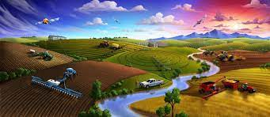

THE FORMER IS THE ONLY MAN IN OUR ECONOMY WHO BAYS EVETHERTHING AT RETAIL SELLS EVERYTHING AT WHOLESALE AND PAYS THE FREIGHT BOTH WAYS Natural Farming: Anchoring a Sustainable Way of Farming! Natural Farming offers a solution to various problems, such as food insecurity, farmers’ distress, and health problems arising due to pesticide and fertilizer residue in food and water, global warming, climate change and natural calamities. It also has the potential to generate employment, thereby stemming the migration of rural youth. Natural Farming, as the name suggests, is the art, practice and, increasingly, the science of working with nature to achieve much more with less. Improve Yield Farmers practising Natural Farming reported similar yields to those following conventional farming. In several cases, higher yields per harvest were also reported. Increased Farmers’ Income
Natural Farming aims to make farming viable and aspirational by increasing net incomes of farmers on account of
cost
reduction, reduced risks, similar yields, incomes from intercropping
Minimized Cost Of Production
Natural Farming aims to drastically cut down production costs by encouraging farmers to prepare essential
biological
inputs using on-farm, natural and home-grown resources.
Ensures Better Health
As Natural Farming does not use any synthetic chemicals, health risks and hazards are eliminated. The food has
higher
nutrition density and therefore offers better health benefits.
Employment Generation
Natural farming generates employment on account of natural farming input enterprises, value addition, marketing
in local
areas, etc. The surplus from natural farming is invested in the village itself
Eliminates Application Of Synthetic Chemical Inputs
The overuse of synthetic fertilizers, especially urea, pesticides, herbicides, weedicides etc. alters soil
biology and
soil structure, with subsequent loss of soil organic carbon and fertility.
Environment Conservation
Natural Farming ensures better soil biology, improved agrobiodiversity and a more judicious usage of water with
much
smaller carbon and nitrogen footprints.
Reduced Water Consumption
By working with diverse crops that help each other and cover the soil to prevent unnecessary water loss through
evaporation, Natural Farming optimizes the amount of ‘crop per drop’.
Rejuvenates Soil Health
The most immediate impact of Natural Farming is on the biology of soil—on microbes and other living organisms
such as
earthworms. Soil health depends entirely on the living organisms in it
Livestock Sustainability
The integration of livestock in the farming system plays a important role in Natural farming and helps in
restoring the
ecosystem. Ecofriendly bio-inputs, such as Jivamrit and Beejamrit, are prepared from cow dung and urine, and
other
natural products